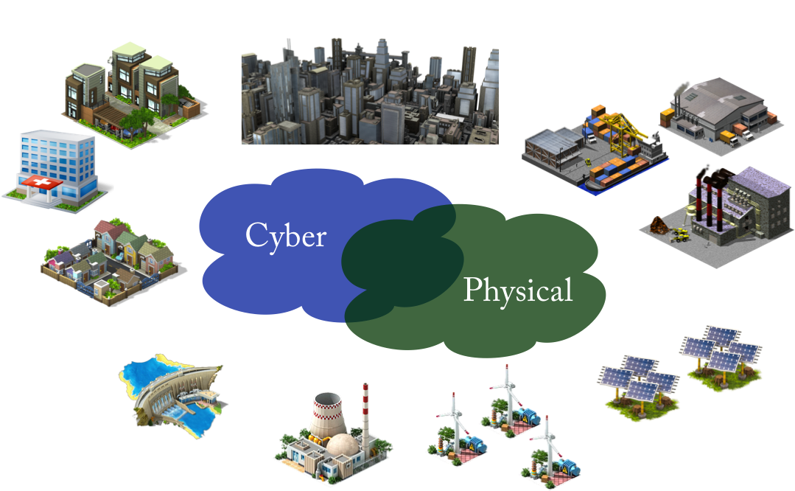
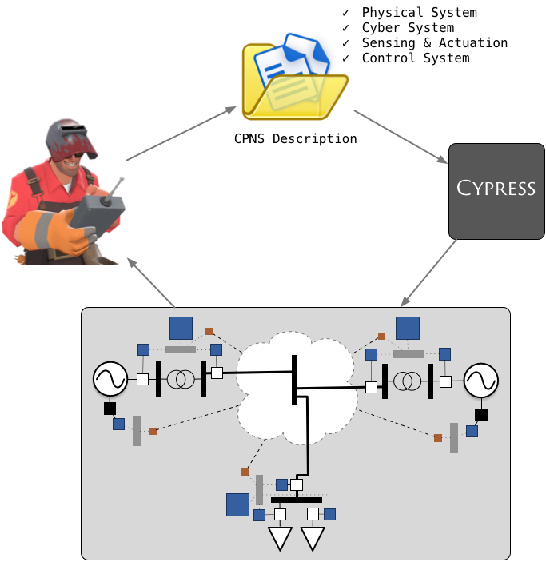
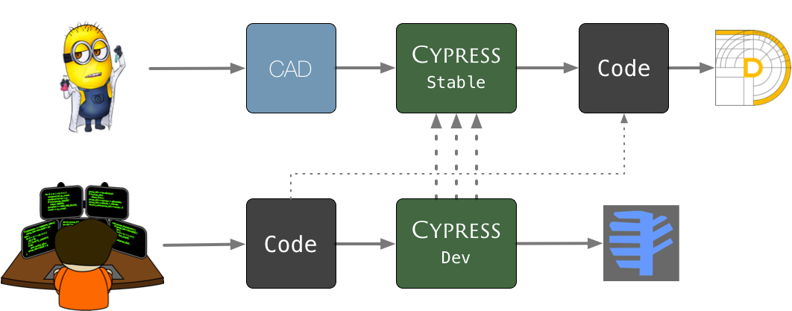
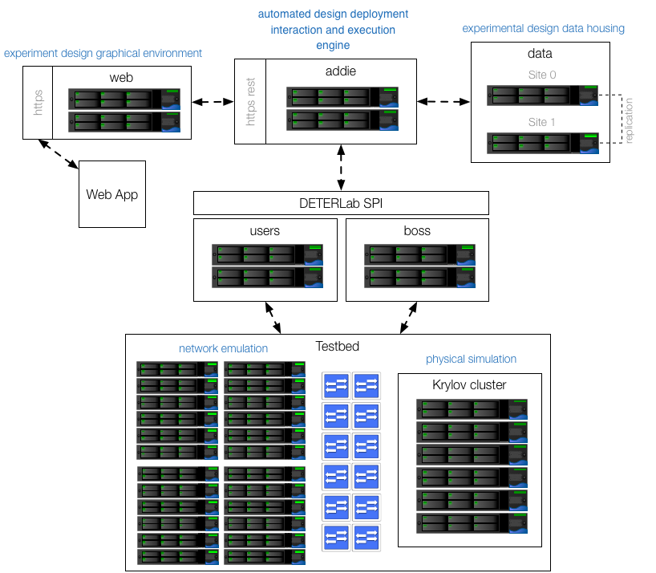
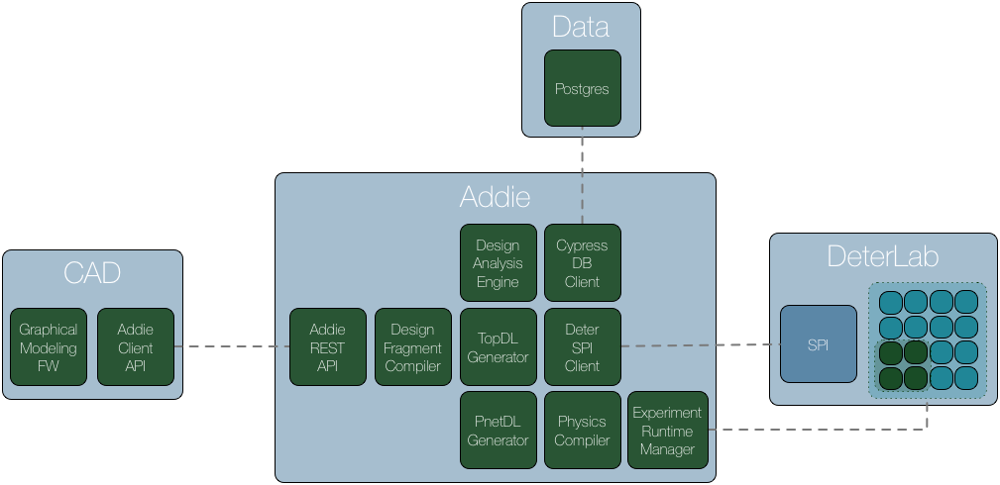
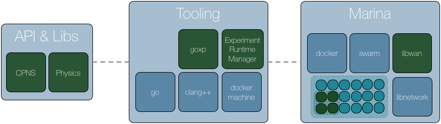
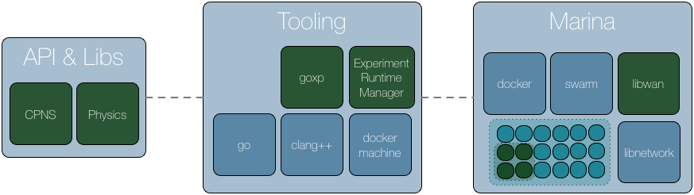

Cyber-Physical Research Ecosystem
Cyber-Physical Networked Energy Systems
Modeling and Simulation at Scale and Fidelity Usage Model & Workflow + Demos

A Tale of 2 Implementations

CAD Demo
Code Demo
Architecture
Stable Architecture (Physical)

Stable Architecture (Logical)

Development Architecture


Pretty Code
function linkify( selector ) {
if( supports3DTransforms ) {
var nodes = document.querySelectorAll( selector );
for( var i = 0, len = nodes.length; i < len; i++ ) {
var node = nodes[i];
if( !node.className ) {
node.className += ' roll';
}
}
}
}
Code syntax highlighting courtesy of highlight.js.